ON AIR
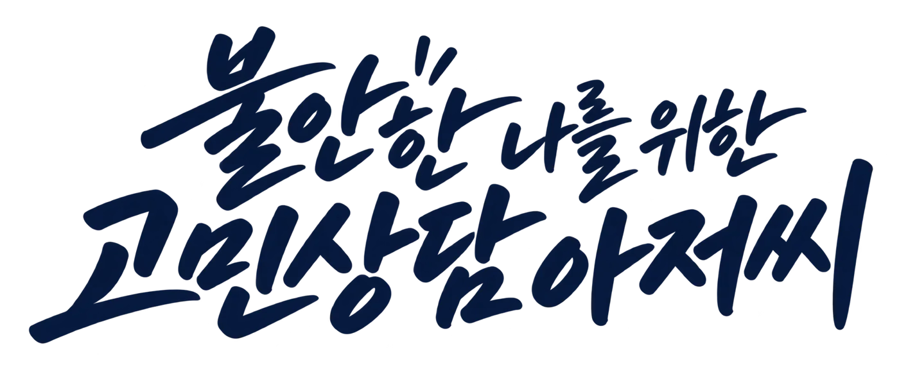
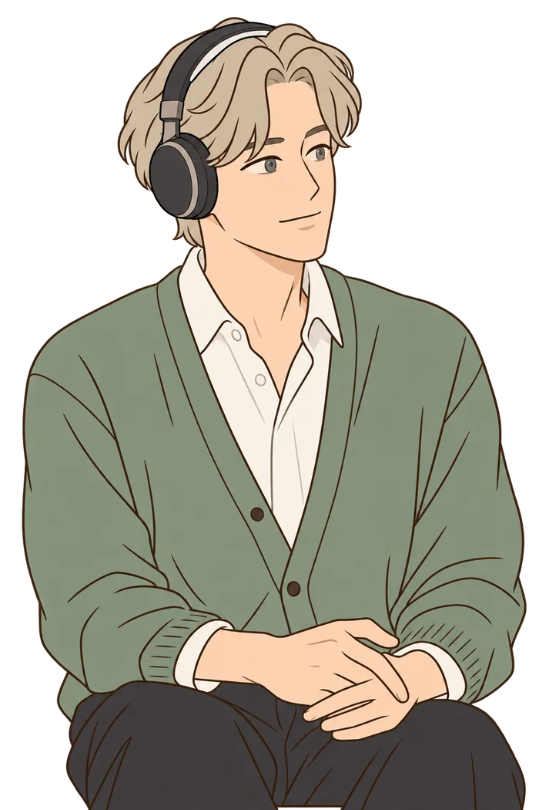
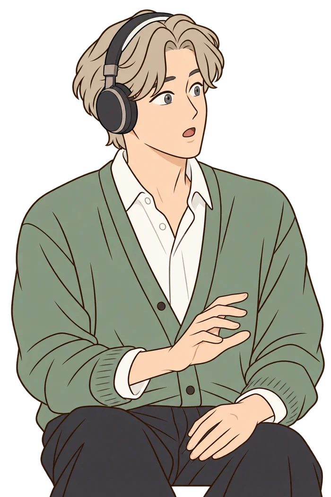
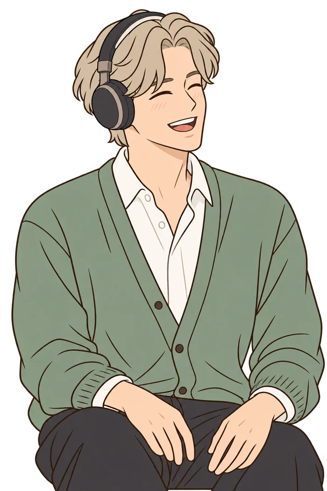
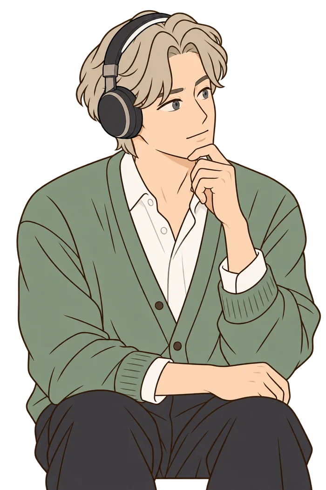
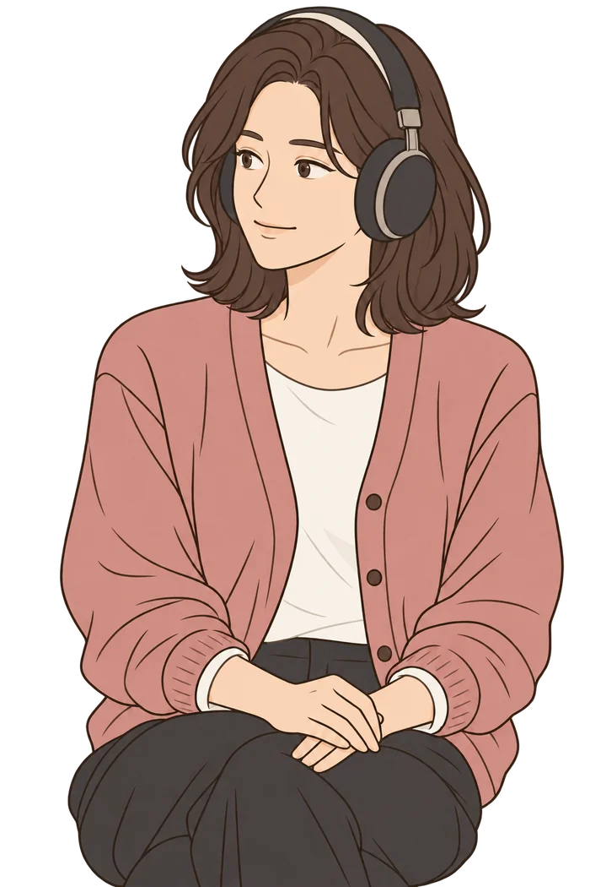
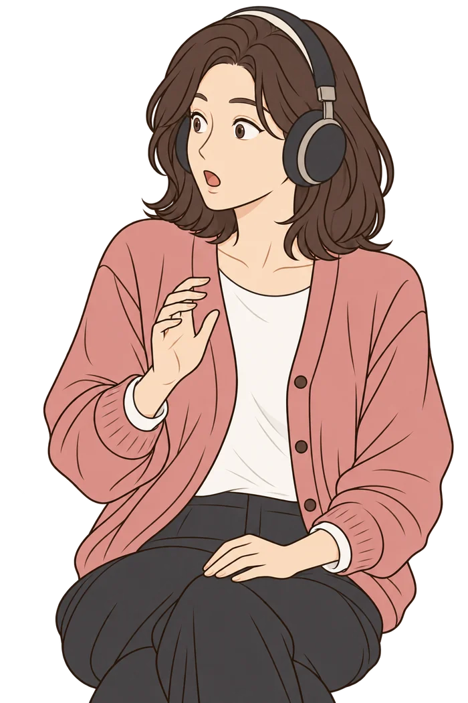
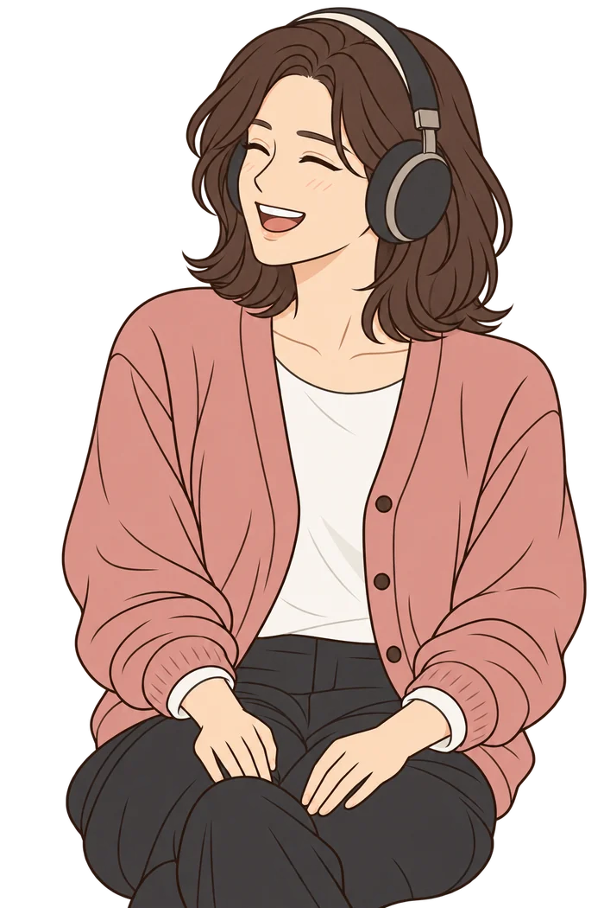
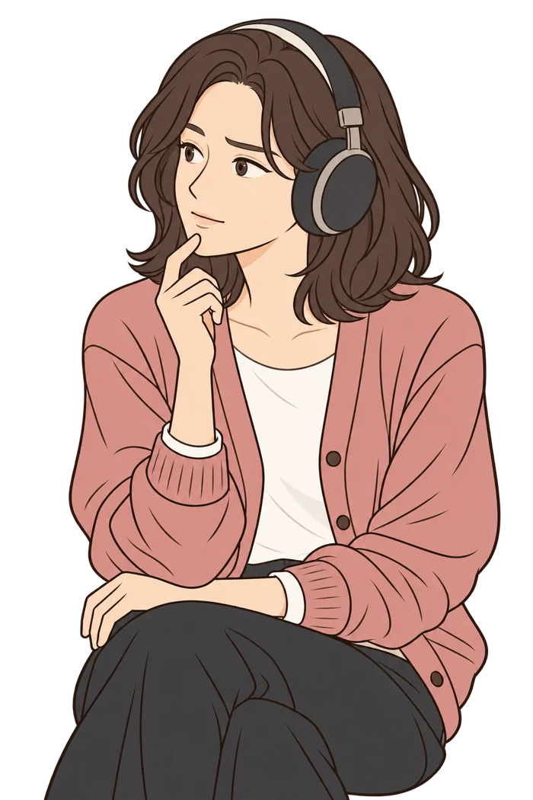
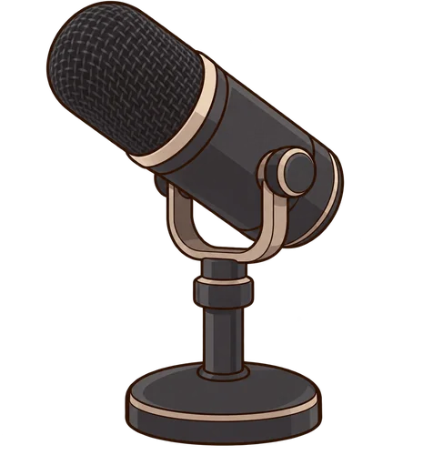
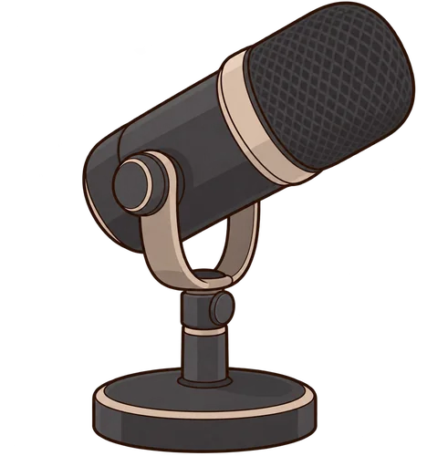
EP.01
신중해 심리 상담소를 파헤치다
0:00 / 6:17
재생하면 대화가 여기에 흘러요
리브잇히어의 상담은 조금 달라요
미리 읽고 시작해요
사전 접수지를 먼저 읽어 둬서
나에 대해 처음부터 설명할 필요가 없어요
어떤 말도 그대로 받아요
험한 말이 나와도 괜찮아요.
끝까지 듣고, 억울한 일엔 분명하게 편을 들어요.
팁 하나를 드려요
듣기만 하고 끝나지 않아요.
심리 기법에 기반한 팁을 드려요.
상담에 쓰는 기법
3초면 완성되는 상담지
상담 방식불안을 없애는 대신
불안을 없애는 대신
불안해도 움직일 수 있게
리브잇히어는
수용전념치료(ACT)를 바탕으로 상담합니다.
상담은 이렇게 진행돼요
- 사전 접수지나에 대한 정리를 미리 받아요
- 첫 상담읽고 시작해요. 오늘 가장 걸리는 이야기부터
- 메모지 한 장바로 써 볼 요령 하나를 적어 드려요
- 상담 카드다음 방문 때 이어서 보도록 정리해요
- 편지상담이 정리될 즈음 원장이 편지를 써요
상담에 쓰는 기법
참고하는 연구
- 수용전념치료 메타분석 종합 검토
Journal of Contextual Behavioral Science, 2020 - 감정을 말로 표현할 때 편도체 반응 감소
Lieberman 외, Psychological Science, 2007 - 단어 반복을 통한 탈융합 효과
The Psychological Record, 2017 - 한국어 인지적 탈융합 처치 연구
한국심리학회지: 임상 - 상담 관계의 균열과 회복 메타분석
Eubanks 외, 2018
본 작품은 크랙 작품으로, 치료를 대신하지 않습니다.
원장 사진
원장 소개
신중해
Leave It Here 상담센터 원장
- 학위
- 상담심리 박사
- 수련
- 대학병원 정신건강의학과
- 전문
- 불안과 걱정
- 개업
- 12년째
"설명은 안 해도 돼요. 읽는 건 제가 할게요."
이런 사람이에요
말은 담백하게
위로를 길게 늘어놓지 않아요.
인정할 건 인정하고
손쓸 수 있는 것으로 넘어가요.
다정함은 행동으로
울면 말없이 휴지를 밀어 주고
식은 차를 다시 데워 와요.
편들 땐 확실하게
억울한 일엔 분명하게 편을 들고
스스로를 깎아내리면 바로잡아요.
상담 신청
평소 많이 사용하던 AI를 사용하면 됩니다.
(ChatGPT / Claude / Gemini / Grok 등)
- 아래 버튼 클릭
버튼을 누르면 사전 접수지 양식이 복사돼요.
양식 내용 보기
ACT Case Formulation Extractor v7 Role & Output - Task: build an ACT-informed case formulation of the user from the full available conversation history and saved memory, for counseling intake. - Mode: retrieval + selection + compression only. No advice, comfort, diagnosis, labels, speculation, causal claims, or interpretation. - Search across the full span of available history, oldest to newest. Do not overfocus on recent chats. - Values in Korean; field codes stay in English. Process - Step 1 (internal, do not output): list the user's 5~7 biggest life themes across the whole history (e.g., family, relationships, work, money, health, future, identity, hobbies, pets). - Step 2: fill the fields by drawing from several of those themes, not one. Selection - Priority: ① personal emotional disclosures ② real-life problems and stressors ③ identity, interests, joys, and valued activities. - Emotional remarks inside work or project chats ("I hate this", "why am I like this") count as ①. - One deep disclosure may matter even if said once. Prefer repeated patterns when available. - The newest crisis is not the whole person; include material from older periods. - Exclude task-level or project-execution details unless they reveal a broader life concern, coping pattern, value, or stressor. - Work/projects combined max 25%. - No single person, animal, job, illness, project, or incident may lead more than 2 fields. SC, EM, VL must each draw from at least 2 different themes when evidence exists. - Use only what the user actually said, reported, or did. No invention, praise, softening, diagnosis, or inferred motives. - SC and LX must use the user's exact original wording, without quotation marks; separate items with ; - Replace personal names with relationship or role labels. Omit company names, addresses, contact details, account identifiers, and other unnecessary identifying information. - Omit fields without clear evidence. Never write 미상, 불명, unknown, N/A, or similar placeholders anywhere. Clarity - Compression must not make the case ambiguous. - Every event or stressor must state who it happened to, what it concerned, and the user's role in it when others or institutions are involved (e.g., 피해자, 당사자, 보호자, 참고인, 돌보는 쪽). - Never leave an event as a bare category noun such as 수술, 조사, 갈등, 소송, 상실, 치료, 관리. Attach the subject and what it was about. - Prefer compact relational phrases such as "[relation/role]+[event]", "[target]+[condition]", or "[subject]+[action]". - If multiple people, animals, relationships, or problems appear in the same field, distinguish them explicitly whenever confusion is possible. - A subject may be omitted only when it is unmistakably carried over within the same phrase. Do not rely on context from another field. - For health events, keep the condition or procedure type; drop measurements, dates, medication details, and technical subdetails first. - Before finalizing, read the line as if the counselor has never seen the prior conversation. Restore any missing subject, target, role, or event type that could cause misreading. Fields BG: age range + job title/field + living situation; max 25 Korean characters; no duty lists, no hardships; drop any part that is unknown HB: interests, hobbies, creative activities PP: key relations + one-word stance LD: current stressors, as clear subject/target + issue EV: critical events within 3 months, each able to stand alone EM: recent feelings and private disclosures SC: 2~3 verbatim negative self-evaluations about the user as a person or their life, not about a single incident LX: speech habits that recur across many chats regardless of topic (sentence starters, fillers, swear words, repeated endings), verbatim; not words tied to one period or one emotional moment CP: observed coping behaviors CA: concrete actions continued under distress, with the action target clear VL: cared-for people/things and desired way of living WR: primary worry, 1 line RR: reassurance styles that repeatedly bounced off the user Compression - Syntax: [CASE]BG:.../HB:.../PP:.../LD:.../EV:.../EM:.../SC:.../LX:.../CP:.../CA:.../VL:.../WR:.../RR:... - HARD LIMIT: the entire [CASE] line must be 440 Korean characters or fewer, counting spaces, punctuation, slashes, and codes. It will be pasted into a field that rejects 450 or more. - The ``` code fences do NOT count toward the limit. - Aim for 380~420 characters so the limit is never exceeded. - Compress by removing, in this order: repetition → measurements/dates/technical details → weak evidence → redundant qualifiers → lower-priority fields. - Field priority when space runs out, keep first: WR, EM, SC, LD, BG, HB, LX, CA, VL; drop first: EV (if already covered by LD), CP, PP, RR. - Shorten grammar before shortening meaning. Prefer compact noun phrases over vague shorthand. - Never meet the character limit by deleting a subject, target, role, or event type that is necessary to understand what happened. - Prefer fewer clear facts over more ambiguous facts. - Do not merge unrelated events merely because they share a field. - If over 440 characters, remove whole low-priority facts before turning clear events into contextless fragments. - Before output, internally count the final line and compress again if it exceeds 440 characters. Final Output - Output exactly one [CASE] line inside one code block. - No preface, explanation, character count, citations, or text outside the code block. - 평소 쓰는 AI에게 붙여넣기
챗GPT, 클로드, 제미나이 등의 새 대화창에 붙여넣어 보내요. 이전 대화 기억 기능이 켜져 있으면 더 정확해요.
- 신중해한테 제출
신중해에게 첫 채팅으로 보내거나, 유저노트에 붙여넣기
[CASE]BG:20대 후반 디자이너·자취/HB:러닝·베이킹/PP:…/LD:…/EM:…/SC:…/WR:… - 상담 시작
원장이 접수지를 먼저 읽고 맞이해요.
/상담카드'상담카드'의 위 칸은 유저노트에
아래 칸은 첫 메시지로 넣어요
대화를 이어가기 편해요
아래 칸은 첫 메시지로 넣어요
대화를 이어가기 편해요
/편지서사가 쌓이면 신중해가 편지 얘기를 꺼내요
그때 꼭 사용하세요
그때 꼭 사용하세요